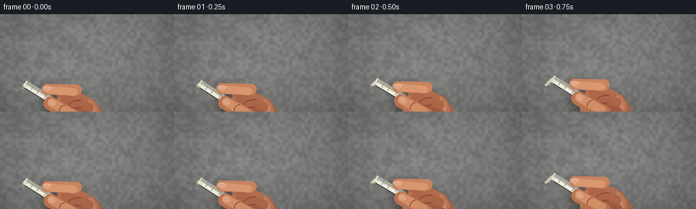
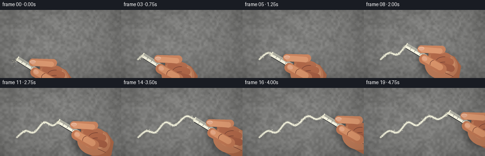
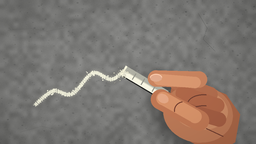

CODING AGENTS AS PIXEL WORLD MODELS
traex/GPT-5.6-Sol · mechanics_0044
点击播放 · 原生 RGB 像素
逐轮保存的候选
回放视频、检查图与代码变化。
每份候选均可单独播放。实际图片检查记录在下方工具轨迹中。
候选 01播放与检查图
点击播放 · 原生 RGB 像素


展开代码变化
--- 上一保存版本
+++ 本次保存版本
@@ -0,0 +1,215 @@
+from pathlib import Path
+import math
+import numpy as np
+from PIL import Image, ImageDraw, ImageFilter
+import artifact_io
+
+W,H,N = 256,144,20
+S=4
+WW,HH=W*S,H*S
+ROOT=Path(__file__).resolve().parent
+rng=np.random.default_rng(4404)
+
+def noise_layer(w,h,small,seed):
+ r=np.random.default_rng(seed)
+ a=(r.random((max(2,h//small),max(2,w//small)))*255).astype(np.uint8)
+ return np.asarray(Image.fromarray(a).resize((w,h),Image.Resampling.BICUBIC),dtype=np.float32)/255.
+
+# A fixed, detailed concrete wall plate.
+yy,xx=np.mgrid[0:HH,0:WW]
+n0=noise_layer(WW,HH,2,4)-.5
+nn=noise_layer(WW,HH,18,17)-.5
+n2=noise_layer(WW,HH,70,31)-.5
+light=1.0-0.12*((xx-WW*.44)/(WW*.75))**2-0.09*((yy-HH*.38)/(HH*.8))**2
+base=124 + 21*nn + 11*n2 + 5*n0
+base*=light
+wall=np.zeros((HH,WW,3),dtype=np.uint8)
+for c,bias in enumerate([3,3,1]): wall[...,c]=np.clip(base+bias,52,178)
+wall_img=Image.fromarray(wall,'RGB')
+d=ImageDraw.Draw(wall_img,'RGBA')
+# Aggregate grains and pores.
+for i in range(1450):
+ x=int(rng.integers(0,WW)); y=int(rng.integers(0,HH))
+ r=float(rng.choice([.45,.65,.9,1.2,1.8,2.4]))*S/2.4
+ if rng.random()<.62:
+ col=(36,39,39,int(rng.integers(14,52)))
+ d.ellipse((x-r,y-r*.55,x+r,y+r*.55),fill=col)
+ if r>2: d.arc((x-r,y-r*.55,x+r,y+r*.55),185,350,fill=(205,205,196,25),width=1)
+ else:
+ d.point((x,y),fill=(224,222,208,int(rng.integers(18,48))))
+# A few hairline cracks, restrained so the chalk is dominant.
+for pts in [[(8,30),(31,28),(47,31),(67,27)],[(198,13),(207,28),(203,39),(215,51)],[(20,132),(42,126),(55,129)]]:
+ p=[(a*S,b*S) for a,b in pts]
+ d.line(p,fill=(45,47,47,52),width=max(1,S//2))
+ d.line([(x+S,y) for x,y in p],fill=(204,204,196,18),width=1)
+
+# Catmull-Rom path through an expressive, continuous chalk gesture.
+controls=np.array([[35,105],[53,91],[72,94],[93,73],[113,79],[137,60],[158,66],[181,51]],float)
+def catmull(points,steps=70):
+ p=np.vstack([points[0],points,points[-1]])
+ out=[]
+ for i in range(1,len(p)-2):
+ p0,p1,p2,p3=p[i-1:i+3]
+ for j in range(steps):
+ t=j/steps
+ v=.5*((2*p1)+(-p0+p2)*t+(2*p0-5*p1+4*p2-p3)*t*t+(-p0+3*p1-3*p2+p3)*t*t*t)
+ out.append(v)
+ out.append(points[-1])
+ out=np.asarray(out)
+ ds=np.sqrt(((out[1:]-out[:-1])**2).sum(1)); cum=np.r_[0,np.cumsum(ds)]
+ u=np.linspace(0,cum[-1],700)
+ return np.column_stack([np.interp(u,cum,out[:,0]),np.interp(u,cum,out[:,1])])
+path=catmull(controls)
+
+def poly_ellipse(cx,cy,rx,ry,angle=0,n=48):
+ t=np.linspace(0,2*np.pi,n,endpoint=False); ca,sa=np.cos(angle),np.sin(angle)
+ x=cx+rx*np.cos(t)*ca-ry*np.sin(t)*sa
+ y=cy+rx*np.cos(t)*sa+ry*np.sin(t)*ca
+ return [(int(a*S),int(b*S)) for a,b in zip(x,y)]
+
+def capsule(draw,a,b,r,fill,outline=None,width=1):
+ ax,ay=a; bx,by=b; dx=bx-ax; dy=by-ay; L=max(1,math.hypot(dx,dy)); nx=-dy/L*r; ny=dx/L*r
+ poly=[((ax+nx)*S,(ay+ny)*S),((bx+nx)*S,(by+ny)*S),((bx-nx)*S,(by-ny)*S),((ax-nx)*S,(ay-ny)*S)]
+ draw.polygon(poly,fill=fill)
+ rr=r*S
+ draw.ellipse((ax*S-rr,ay*S-rr,ax*S+rr,ay*S+rr),fill=fill)
+ draw.ellipse((bx*S-rr,by*S-rr,bx*S+rr,by*S+rr),fill=fill)
+ if outline:
+ draw.line([((ax+nx)*S,(ay+ny)*S),((bx+nx)*S,(by+ny)*S)],fill=outline,width=width*S)
+
+def draw_chalk_trace(im, upto, frame):
+ # softly embedded powder halo
+ count=max(1,int(upto*(len(path)-1)))
+ pts=path[:count+1]
+ halo=Image.new('RGBA',(WW,HH),(0,0,0,0)); hd=ImageDraw.Draw(halo)
+ pp=[tuple((v*S).astype(int)) for v in pts]
+ if len(pp)>1:
+ hd.line(pp,fill=(244,242,221,75),width=7*S,joint='curve')
+ halo=halo.filter(ImageFilter.GaussianBlur(2.2*S))
+ im.alpha_composite(halo)
+ # granular, broken main stroke built from short variable-width runs
+ md=ImageDraw.Draw(im,'RGBA')
+ rr=np.random.default_rng(2020)
+ for i in range(1,count+1):
+ a=path[i-1]; b=path[i]
+ # persistent gaps and changes in pressure
+ val=.5+.5*math.sin(i*.79)+.26*math.sin(i*2.71)
+ if val<.17: continue
+ width=(2.7+1.45*val)*S
+ md.line([tuple(a*S),tuple(b*S)],fill=(238,237,216,int(175+65*val)),width=max(2,int(width)))
+ # crisp center fragments and dusty edge crumbs, deterministic and persistent
+ rr=np.random.default_rng(736)
+ for j in range(int(count*.25)):
+ k=int(rr.integers(0,max(1,count)))
+ q=path[k]+rr.normal(0,[1.8,1.5])
+ rad=rr.uniform(.18,.65)*S
+ md.ellipse((q[0]*S-rad,q[1]*S-rad,q[0]*S+rad,q[1]*S+rad),fill=(247,246,225,int(rr.integers(80,185))))
+
+def draw_hand_and_chalk(im,p,tangent,frame):
+ # Chalk points from the contact into the hand, generally down-right.
+ angle=math.atan2(.53,.85) + .025*math.sin(frame*2.2)
+ ux,uy=math.cos(angle),math.sin(angle); nx,ny=-uy,ux
+ jitter=.42*math.sin(frame*2.9)
+ px,py=p[0]+nx*jitter,p[1]+ny*jitter
+
+ # broad soft cast shadow where hand and chalk sit off the wall
+ sh=Image.new('RGBA',(WW,HH),(0,0,0,0)); sd=ImageDraw.Draw(sh)
+ palm=(px+66,py+41)
+ sd.polygon(poly_ellipse(palm[0]+3,palm[1]+4,37,28,angle*.25),fill=(16,13,11,105))
+ capsule(sd,(px+30,py+8),(px+72,py+21),8,(12,10,8,90))
+ capsule(sd,(px+35,py+31),(px+76,py+54),11,(12,10,8,90))
+ sh=sh.filter(ImageFilter.GaussianBlur(6*S)); im.alpha_composite(sh)
+ dr=ImageDraw.Draw(im,'RGBA')
+
+ # wrist/palm silhouette, modeled with warm layered values
+ palm_poly=[(px+48,py+14),(px+72,py+12),(px+102,py+24),(px+116,py+44),
+ (px+111,py+72),(px+90,py+84),(px+62,py+69),(px+42,py+47)]
+ dr.polygon([(x*S,y*S) for x,y in palm_poly],fill=(172,104,72,255))
+ dr.polygon(poly_ellipse(px+74,py+43,35,29,.20),fill=(190,123,88,255))
+ dr.polygon(poly_ellipse(px+76,py+39,28,20,.18),fill=(205,141,103,190))
+ dr.polygon(poly_ellipse(px+67,py+34,17,11,.2),fill=(225,162,122,80))
+ # rear curled fingers
+ capsule(dr,(px+86,py+24),(px+53,py+12),7.6,(181,111,79,255))
+ capsule(dr,(px+93,py+35),(px+59,py+23),7.4,(178,105,74,255))
+ capsule(dr,(px+95,py+49),(px+64,py+40),7.2,(166,95,68,255))
+ # finger separation and skin folds
+ for off in (0,11,23):
+ dr.arc(((px+63)*S,(py+24+off)*S,(px+96)*S,(py+44+off)*S),195,280,fill=(112,63,50,90),width=S)
+ dr.line([((px+82)*S,(py+58)*S),((px+99)*S,(py+66)*S)],fill=(111,61,47,75),width=S)
+
+ # chalk shadow and chalk cylinder; tip is flattened against wall
+ tip=np.array([px,py]); end=tip+np.array([ux,uy])*49
+ half=5.1
+ corners=[tip+np.array([nx,ny])*half, end+np.array([nx,ny])*half,
+ end-np.array([nx,ny])*half, tip-np.array([nx,ny])*half]
+ dr.polygon([tuple((v+np.array([1.5,2.1]))*S) for v in corners],fill=(30,30,29,90))
+ dr.polygon([tuple(v*S) for v in corners],fill=(220,218,199,255))
+ # lit and shaded longitudinal planes
+ top=[tip+np.array([nx,ny])*half,end+np.array([nx,ny])*half,end+np.array([nx,ny])*.5,tip+np.array([nx,ny])*.5]
+ bot=[tip-np.array([nx,ny])*.5,end-np.array([nx,ny])*.5,end-np.array([nx,ny])*half,tip-np.array([nx,ny])*half]
+ dr.polygon([tuple(v*S) for v in top],fill=(249,247,228,230))
+ dr.polygon([tuple(v*S) for v in bot],fill=(176,176,164,180))
+ # worn rough tip
+ dr.line([tuple((tip+np.array([nx,ny])*half)*S),tuple((tip-np.array([nx,ny])*half)*S)],fill=(253,250,225,255),width=2*S)
+ # chalk surface scratches
+ for k in (12,22,35):
+ c=tip+np.array([ux,uy])*k
+ dr.line([tuple((c+np.array([nx,ny])*3.6)*S),tuple((c-np.array([nx,ny])*3.6)*S)],fill=(151,151,141,85),width=1*S)
+
+ # Pinching index finger over the upper side and thumb below it.
+ capsule(dr,(px+75,py+9),(px+32,py+8),8.1,(203,133,96,255))
+ capsule(dr,(px+71,py+12),(px+35,py+9),5.7,(221,154,114,150))
+ # index nail
+ dr.polygon(poly_ellipse(px+32,py+7.3,6.0,3.8,-.02),fill=(226,171,142,230))
+ dr.arc(((px+25.8)*S,(py+3.3)*S,(px+38.2)*S,(py+11.1)*S),180,355,fill=(250,202,171,150),width=S)
+ capsule(dr,(px+75,py+50),(px+37,py+29),10.1,(194,121,85,255))
+ capsule(dr,(px+71,py+46),(px+39,py+28),6.6,(219,149,107,150))
+ # thumb nail and joint crease
+ dr.polygon(poly_ellipse(px+39,py+28,5.8,4.4,angle),fill=(230,169,135,235))
+ dr.arc(((px+50)*S,(py+31)*S,(px+70)*S,(py+49)*S),170,260,fill=(117,63,48,85),width=S)
+
+ # fresh friction dust: directional chips, plume and falling powder
+ dust=Image.new('RGBA',(WW,HH),(0,0,0,0)); dd=ImageDraw.Draw(dust)
+ fr=np.random.default_rng(900+frame)
+ speed=1.0
+ # impact cloud precisely around contact
+ for i in range(34):
+ back=fr.exponential(3.2)
+ qx=px - tangent[0]*back + fr.normal(0,2.5)
+ qy=py - tangent[1]*back + fr.normal(1.2,2.2)
+ r=fr.uniform(.15,.7)*S
+ alpha=int(fr.integers(45,185))
+ dd.ellipse((qx*S-r,qy*S-r,qx*S+r,qy*S+r),fill=(249,246,221,alpha))
+ # a handful of legible airborne fragments falling downward
+ for i in range(10):
+ age=fr.uniform(0,1)
+ qx=px+fr.normal(-1.5,4.0)-tangent[0]*fr.uniform(1,7)
+ qy=py+3+age*age*15+fr.normal(0,1.3)
+ r=fr.uniform(.25,.75)*S
+ dd.ellipse((qx*S-r,qy*S-r*.55,qx*S+r,qy*S+r*.55),fill=(240,238,216,int(185*(1-age*.55))))
+ soft=dust.filter(ImageFilter.GaussianBlur(.35*S)); im.alpha_composite(soft)
+ im.alpha_composite(dust)
+
+frames=[]
+for f in range(N):
+ # ease slightly at beginning and end, while remaining visibly active throughout
+ z=f/(N-1)
+ prog=.018 + .976*(z*z*(3-2*z))
+ idx=min(len(path)-2,max(1,int(prog*(len(path)-1))))
+ p=path[idx]
+ tangent=path[min(len(path)-1,idx+4)]-path[max(0,idx-4)]
+ tangent=tangent/max(1e-6,np.linalg.norm(tangent))
+ im=wall_img.convert('RGBA')
+ draw_chalk_trace(im,prog,f)
+ draw_hand_and_chalk(im,p,tangent,f)
+ # cinematic edge falloff; restrained cool cast in corners
+ arr=np.asarray(im.convert('RGB')).astype(np.float32)
+ y,x=np.mgrid[0:HH,0:WW]
+ vig=1-.13*np.clip(((x-WW/2)/(WW*.67))**2+((y-HH/2)/(HH*.8))**2,0,1)
+ arr*=vig[...,None]
+ out=Image.fromarray(np.clip(arr,0,255).astype(np.uint8)).resize((W,H),Image.Resampling.LANCZOS)
+ frames.append(np.asarray(out,dtype=np.uint8))
+
+frames=np.stack(frames)
+artifact_io.save(frames,ROOT)
+print('saved',frames.shape,frames.dtype)
可观测工具轨迹
实际执行的命令与返回图片。
命令 1exit 0
/bin/bash -lc "cat prompt.txt && printf '\\n---RULES---\\n' && cat GENERATION_RULES.md && printf '\\n---SPEC---\\n' && cat task_spec.json"
命令 2exit 0
/bin/bash -lc "find . -maxdepth 2 -type f -printf '%p\\n' | sort"
命令 3exit 0
/bin/bash -lc 'cat artifact_io.py'
命令 4exit 0
/bin/bash -lc "cat > generate.py <<'PY'
from pathlib import Path
import math
import numpy as np
from PIL import Image, ImageDraw, ImageFilter
import artifact_io
W,H,N = 256,144,20
S=4
WW,HH=W*S,H*S
ROOT=Path(__file__).resolve().parent
rng=np.random.default_rng(4404)
def noise_layer(w,h,small,seed):
r=np.random.default_rng(seed)
a=(r.random((max(2,h//small),max(2,w//small)))*255).astype(np.uint8)
return np.asarray(Image.fromarray(a).resize((w,h),Image.Resampling.BICUBIC),dtype=np.float32)/255.
# A fixed, detailed concrete wall plate.
yy,xx=np.mgrid[0:HH,0:WW]
n0=noise_layer(WW,HH,2,4)-.5
nn=noise_layer(WW,HH,18,17)-.5
n2=noise_layer(WW,HH,70,31)-.5
light=1.0-0.12*((xx-WW*.44)/(WW*.75))**2-0.09*((yy-HH*.38)/(HH*.8))**2
base=124 + 21*nn + 11*n2 + 5*n0
base*=light
wall=np.zeros((HH,WW,3),dtype=np.uint8)
for c,bias in enumerate([3,3,1]): wall[...,c]=np.clip(base+bias,52,178)
wall_img=Image.fromarray(wall,'RGB')
d=ImageDraw.Draw(wall_img,'RGBA')
# Aggregate grains and pores.
for i in range(1450):
x=int(rng.integers(0,WW)); y=int(rng.integers(0,HH))
r=float(rng.choice([.45,.65,.9,1.2,1.8,2.4]))*S/2.4
if rng.random()<.62:
col=(36,39,39,int(rng.integers(14,52)))
d.ellipse((x-r,y-r*.55,x+r,y+r*.55),fill=col)
if r>2: d.arc((x-r,y-r*.55,x+r,y+r*.55),185,350,fill=(205,205,196,25),width=1)
else:
d.point((x,y),fill=(224,222,208,int(rng.integers(18,48))))
# A few hairline cracks, restrained so the chalk is dominant.
for pts in [[(8,30),(31,28),(47,31),(67,27)],[(198,13),(207,28),(203,39),(215,51)],[(20,132),(42,126),(55,129)]]:
p=[(a*S,b*S) for a,b in pts]
d.line(p,fill=(45,47,47,52),width=max(1,S//2))
d.line([(x+S,y) for x,y in p],fill=(204,204,196,18),width=1)
# Catmull-Rom path through an expressive, continuous chalk gesture.
controls=np.array([[35,105],[53,91],[72,94],[93,73],[113,79],[137,60],[158,66],[181,51]],float)
def catmull(points,steps=70):
p=np.vstack([points[0],points,points[-1]])
out=[]
for i in range(1,len(p)-2):
p0,p1,p2,p3=p[i-1:i+3]
for j in range(steps):
t=j/steps
v=.5*((2*p1)+(-p0+p2)*t+(2*p0-5*p1+4*p2-p3)*t*t+(-p0+3*p1-3*p2+p3)*t*t*t)
out.append(v)
out.append(points[-1])
out=np.asarray(out)
ds=np.sqrt(((out[1:]-out[:-1])**2).sum(1)); cum=np.r_[0,np.cumsum(ds)]
u=np.linspace(0,cum[-1],700)
return np.column_stack([np.interp(u,cum,out[:,0]),np.interp(u,cum,out[:,1])])
path=catmull(controls)
def poly_ellipse(cx,cy,rx,ry,angle=0,n=48):
t=np.linspace(0,2*np.pi,n,endpoint=False); ca,sa=np.cos(angle),np.sin(angle)
x=cx+rx*np.cos(t)*ca-ry*np.sin(t)*sa
y=cy+rx*np.cos(t)*sa+ry*np.sin(t)*ca
return [(int(a*S),int(b*S)) for a,b in zip(x,y)]
def capsule(draw,a,b,r,fill,outline=None,width=1):
ax,ay=a; bx,by=b; dx=bx-ax; dy=by-ay; L=max(1,math.hypot(dx,dy)); nx=-dy/L*r; ny=dx/L*r
poly=[((ax+nx)*S,(ay+ny)*S),((bx+nx)*S,(by+ny)*S),((bx-nx)*S,(by-ny)*S),((ax-nx)*S,(ay-ny)*S)]
draw.polygon(poly,fill=fill)
rr=r*S
draw.ellipse((ax*S-rr,ay*S-rr,ax*S+rr,ay*S+rr),fill=fill)
draw.ellipse((bx*S-rr,by*S-rr,bx*S+rr,by*S+rr),fill=fill)
if outline:
draw.line([((ax+nx)*S,(ay+ny)*S),((bx+nx)*S,(by+ny)*S)],fill=outline,width=width*S)
def draw_chalk_trace(im, upto, frame):
# softly embedded powder halo
count=max(1,int(upto*(len(path)-1)))
pts=path[:count+1]
halo=Image.new('RGBA',(WW,HH),(0,0,0,0)); hd=ImageDraw.Draw(halo)
pp=[tuple((v*S).astype(int)) for v in pts]
if len(pp)>1:
hd.line(pp,fill=(244,242,221,75),width=7*S,joint='curve')
halo=halo.filter(ImageFilter.GaussianBlur(2.2*S))
im.alpha_composite(halo)
# granular, broken main stroke built from short variable-width runs
md=ImageDraw.Draw(im,'RGBA')
rr=np.random.default_rng(2020)
for i in range(1,count+1):
a=path[i-1]; b=path[i]
# persistent gaps and changes in pressure
val=.5+.5*math.sin(i*.79)+.26*math.sin(i*2.71)
if val<.17: continue
width=(2.7+1.45*val)*S
md.line([tuple(a*S),tuple(b*S)],fill=(238,237,216,int(175+65*val)),width=max(2,int(width)))
# crisp center fragments and dusty edge crumbs, deterministic and persistent
rr=np.random.default_rng(736)
for j in range(int(count*.25)):
k=int(rr.integers(0,max(1,count)))
q=path[k]+rr.normal(0,[1.8,1.5])
rad=rr.uniform(.18,.65)*S
md.ellipse((q[0]*S-rad,q[1]*S-rad,q[0]*S+rad,q[1]*S+rad),fill=(247,246,225,int(rr.integers(80,185))))
def draw_hand_and_chalk(im,p,tangent,frame):
# Chalk points from the contact into the hand, generally down-right.
angle=math.atan2(.53,.85) + .025*math.sin(frame*2.2)
ux,uy=math.cos(angle),math.sin(angle); nx,ny=-uy,ux
jitter=.42*math.sin(frame*2.9)
px,py=p[0]+nx*jitter,p[1]+ny*jitter
# broad soft cast shadow where hand and chalk sit off the wall
sh=Image.new('RGBA',(WW,HH),(0,0,0,0)); sd=ImageDraw.Draw(sh)
palm=(px+66,py+41)
sd.polygon(poly_ellipse(palm[0]+3,palm[1]+4,37,28,angle*.25),fill=(16,13,11,105))
capsule(sd,(px+30,py+8),(px+72,py+21),8,(12,10,8,90))
capsule(sd,(px+35,py+31),(px+76,py+54),11,(12,10,8,90))
sh=sh.filter(ImageFilter.GaussianBlur(6*S)); im.alpha_composite(sh)
dr=ImageDraw.Draw(im,'RGBA')
# wrist/palm silhouette, modeled with warm layered values
palm_poly=[(px+48,py+14),(px+72,py+12),(px+102,py+24),(px+116,py+44),
(px+111,py+72),(px+90,py+84),(px+62,py+69),(px+42,py+47)]
dr.polygon([(x*S,y*S) for x,y in palm_poly],fill=(172,104,72,255))
dr.polygon(poly_ellipse(px+74,py+43,35,29,.20),fill=(190,123,88,255))
dr.polygon(poly_ellipse(px+76,py+39,28,20,.18),fill=(205,141,103,190))
dr.polygon(poly_ellipse(px+67,py+34,17,11,.2),fill=(225,162,122,80))
# rear curled fingers
capsule(dr,(px+86,py+24),(px+53,py+12),7.6,(181,111,79,255))
capsule(dr,(px+93,py+35),(px+59,py+23),7.4,(178,105,74,255))
capsule(dr,(px+95,py+49),(px+64,py+40),7.2,(166,95,68,255))
# finger separation and skin folds
for off in (0,11,23):
dr.arc(((px+63)*S,(py+24+off)*S,(px+96)*S,(py+44+off)*S),195,280,fill=(112,63,50,90),width=S)
dr.line([((px+82)*S,(py+58)*S),((px+99)*S,(py+66)*S)],fill=(111,61,47,75),width=S)
# chalk shadow and chalk cylinder; tip is flattened against wall
tip=np.array([px,py]); end=tip+np.array([ux,uy])*49
half=5.1
corners=[tip+np.array([nx,ny])*half, end+np.array([nx,ny])*half,
end-np.array([nx,ny])*half, tip-np.array([nx,ny])*half]
dr.polygon([tuple((v+np.array([1.5,2.1]))*S) for v in corners],fill=(30,30,29,90))
dr.polygon([tuple(v*S) for v in corners],fill=(220,218,199,255))
# lit and shaded longitudinal planes
top=[tip+np.array([nx,ny])*half,end+np.array([nx,ny])*half,end+np.array([nx,ny])*.5,tip+np.array([nx,ny])*.5]
bot=[tip-np.array([nx,ny])*.5,end-np.array([nx,ny])*.5,end-np.array([nx,ny])*half,tip-np.array([nx,ny])*half]
dr.polygon([tuple(v*S) for v in top],fill=(249,247,228,230))
dr.polygon([tuple(v*S) for v in bot],fill=(176,176,164,180))
# worn rough tip
dr.line([tuple((tip+np.array([nx,ny])*half)*S),tuple((tip-np.array([nx,ny])*half)*S)],fill=(253,250,225,255),width=2*S)
# chalk surface scratches
for k in (12,22,35):
c=tip+np.array([ux,uy])*k
dr.line([tuple((c+np.array([nx,ny])*3.6)*S),tuple((c-np.array([nx,ny])*3.6)*S)],fill=(151,151,141,85),width=1*S)
# Pinching index finger over the upper side and thumb below it.
capsule(dr,(px+75,py+9),(px+32,py+8),8.1,(203,133,96,255))
capsule(dr,(px+71,py+12),(px+35,py+9),5.7,(221,154,114,150))
# index nail
dr.polygon(poly_ellipse(px+32,py+7.3,6.0,3.8,-.02),fill=(226,171,142,230))
dr.arc(((px+25.8)*S,(py+3.3)*S,(px+38.2)*S,(py+11.1)*S),180,355,fill=(250,202,171,150),width=S)
capsule(dr,(px+75,py+50),(px+37,py+29),10.1,(194,121,85,255))
capsule(dr,(px+71,py+46),(px+39,py+28),6.6,(219,149,107,150))
# thumb nail and joint crease
dr.polygon(poly_ellipse(px+39,py+28,5.8,4.4,angle),fill=(230,169,135,235))
dr.arc(((px+50)*S,(py+31)*S,(px+70)*S,(py+49)*S),170,260,fill=(117,63,48,85),width=S)
# fresh friction dust: directional chips, plume and falling powder
dust=Image.new('RGBA',(WW,HH),(0,0,0,0)); dd=ImageDraw.Draw(dust)
fr=np.random.default_rng(900+frame)
speed=1.0
# impact cloud precisely around contact
for i in range(34):
back=fr.exponential(3.2)
qx=px - tangent[0]*back + fr.normal(0,2.5)
qy=py - tangent[1]*back + fr.normal(1.2,2.2)
r=fr.uniform(.15,.7)*S
alpha=int(fr.integers(45,185))
dd.ellipse((qx*S-r,qy*S-r,qx*S+r,qy*S+r),fill=(249,246,221,alpha))
# a handful of legible airborne fragments falling downward
for i in range(10):
age=fr.uniform(0,1)
qx=px+fr.normal(-1.5,4.0)-tangent[0]*fr.uniform(1,7)
qy=py+3+age*age*15+fr.normal(0,1.3)
r=fr.uniform(.25,.75)*S
dd.ellipse((qx*S-r,qy*S-r*.55,qx*S+r,qy*S+r*.55),fill=(240,238,216,int(185*(1-age*.55))))
soft=dust.filter(ImageFilter.GaussianBlur(.35*S)); im.alpha_composite(soft)
im.alpha_composite(dust)
frames=[]
for f in range(N):
# ease slightly at beginning and end, while remaining visibly active throughout
z=f/(N-1)
prog=.018 + .976*(z*z*(3-2*z))
idx=min(len(path)-2,max(1,int(prog*(len(path)-1))))
p=path[idx]
tangent=path[min(len(path)-1,idx+4)]-path[max(0,idx-4)]
tangent=tangent/max(1e-6,np.linalg.norm(tangent))
im=wall_img.convert('RGBA')
draw_chalk_trace(im,prog,f)
draw_hand_and_chalk(im,p,tangent,f)
# cinematic edge falloff; restrained cool cast in corners
arr=np.asarray(im.convert('RGB')).astype(np.float32)
y,x=np.mgrid[0:HH,0:WW]
vig=1-.13*np.clip(((x-WW/2)/(WW*.67))**2+((y-HH/2)/(HH*.8))**2,0,1)
arr*=vig[...,None]
out=Image.fromarray(np.clip(arr,0,255).astype(np.uint8)).resize((W,H),Image.Resampling.LANCZOS)
frames.append(np.asarray(out,dtype=np.uint8))
frames=np.stack(frames)
artifact_io.save(frames,ROOT)
print('saved',frames.shape,frames.dtype)
PY
python generate.py"命令 5exit 0
/bin/bash -lc "python - <<'PY'
import numpy as np
from PIL import Image
from pathlib import Path
fs=[np.array(Image.open(p)) for p in sorted(Path('frames').glob('*.png'))]
for i in range(1,len(fs)):
print(i, np.mean(np.abs(fs[i].astype(float)-fs[i-1].astype(float))), np.mean(np.any(fs[i]"'!=fs[i-1],axis=2)))
PY
ls -lh pixels.npz index.html inspection.png frames/00.png frames/19.png'视觉工具实际返回图片 1

视觉工具实际返回图片 2

保存候选 1 份；完成命令 5 次；可验证图片返回 2 张。原始 API 响应与完整日志保留在本地。